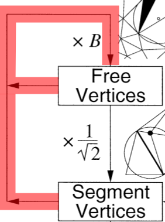
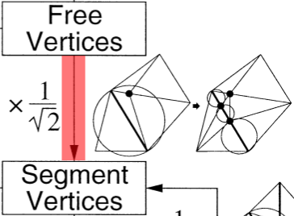
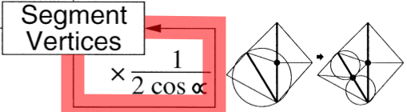
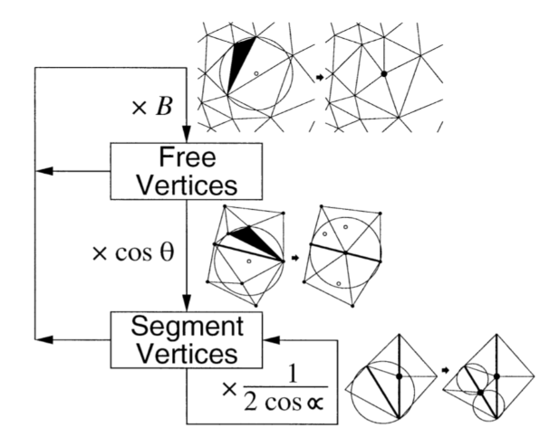
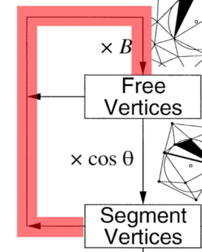
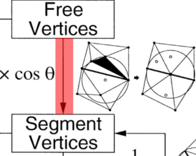
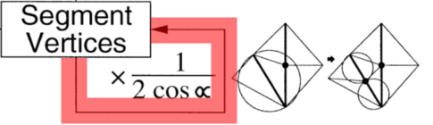

Delaunay Verfeinerung
[1]Finite Elemente Methode
 [2]
[2]
Face tracking
[5]Sichtbarkeit im PSLG
Delaunay Triangulation
Umkreisbedingung
Constrained Delaunay Triangulation
Encroached Subsegments
Skinny Triangles
Verhältnis von Umkreisradius zur kürzesten Kante
1. encroached subsegments teilen
2. skinny triangles entfernen
1. Fall - durch den neuen Knoten enstehen encroached subsegments
2. skinny triangles entfernen
2. Fall - durch den neuen Knoten enstehen keine encroached subsegments
Wieso in dieser Reihenfolge?
Wenn keine encroached subsegments vorhanden sind, liegen neue Knoten immer innerhalb des Graphen
Gilt nur unter diesen Bedingungen:
- Schranke \( B \ge \sqrt{2}\)
- kein Winkel \( \alpha \le 60 \)°
Local feature size - lfs
Radius des kleinsten Umkreises eines Punktes welcher zwei nicht inzidente Merkmale enthält
Einfügeradius
Länge der kürzesten Kante an einem Knoten v nachdem er eingefügt wurde.
Einfügeradius
Eingabeknoten (PSLG)
 [7]
[7]
Einfügeradius
Segmentknoten (encroached subsegment)
 [7]
[7]
Einfügeradius
verworfene Knoten (skinny triangle)
 [7]
[7]
Einfügeradius
freie Knoten (skinny triangle)
 [7]
[7]
Elternknoten
beschreiben Herkunft eines Knotens
 [7]
[7]
Änderung des Einfügeradius bei Kinderknoten
 [7]
[7]
- Schranke \( B \ge \sqrt{2}\)
- kein Winkel \( \alpha \le 60 \)°
freie Kinderknoten
 [7]freie Kinderknoten
\( B = \frac{Umkreisradius}{kürzeste Kante} = \frac{r_v}{r_p} \ge \sqrt{2}\)
\(r_v \ge B*r_p\)
Segment Kinderknoten mit freien Elternknoten
 [7]Segment Knoten aufgrund verworfener Elternknoten
\( r_p = cos(\alpha) * 2r_v\)\( cos(45°) = \frac{\sqrt{2}}{2} \)
\( r_v \ge \frac{r_p}{2cos(\alpha)} \ge \frac{1}{\sqrt(2)} * rp \)
Segment Kinderknoten mit Segment Elternknoten
 [7]Kindknoten von Segment Knoten
p und v auf inzidenten Segmenten \( 45° \le \alpha < 90° \)
\( r_v > \frac{r_p}{2\cos{\alpha}} \)
freie Kinderknoten von Input-Knoten
\( r_v \ge lfs(v) \)
Segment Kinderknoten mit
- Input Elternknoten
- oder einem Knoten der nicht inzident zu s ist
\( r_v \ge lfs(v) \)
Ablauf
1. Skinny triangles entfernen
Entferne skinny triangles
Entferne skinny triangles
2. Fall: ein oder mehrere Subsegmente befinden sich zwischen dem skinny triangle und dem Umkreismittelpunkt
Alle freien Knoten innerhalb des Durchmesserkreis werden entfernt
Eine Termininierung ist nur unter diesen Bedingungen garantiert:
- Schranke \( B \ge \sqrt{5}/2=1.12\)
- kein Winkel \( \alpha \le 60 \)°
Änderung des Einfügeradius bei Kinderknoten
 [7]- Schranke \( B \ge \sqrt{5}/2\)
- kein Winkel \( \alpha \le 60 \)°
freie Kinderknoten
 [7]freie Kinderknoten
\( B = \frac{Umkreisradius}{kürzeste Kante} = \frac{r_v}{r_p} \ge \sqrt{5}/2\)
\(r_v \ge B*r_p\)
Segment Kinderknoten mit freien Elternknoten
 [7]Segment Kinderknoten mit freien Elternknoten
\(\theta = 26.5° = \arcsin \frac{1}{2B} \)
Segment Kinderknoten mit Segment Elternknoten
 [7]Kindknoten von Segment Knoten
p und v auf inzidenten Segmenten \( 45° \le \alpha < 90° \)
\( r_v > \frac{r_p}{2\cos{\alpha}} \)
freie Kinderknoten von Input-Knoten
\( r_v \ge lfs(v) \)
Segment Kinderknoten von Input Elternknoten
\( r_v \ge lfs(v) \)
Quellen
[1] https://github.com/mkacz91/Triangulations - Triangulations Algorithmus
[2] https://upload.wikimedia.org/wikipedia/commons/c/cd/Elmer-pump-heatequation.png
- FEM Modell einer Wärmepumpe
[3] http://www.cs.mun.ca/~omeruvia/philosophy/WireframeBunny.html - 3D Bunny
[4] https://straypixels.net/delaunay-triangulation-terrain - Terrain Generation
[5] https://www.youtube.com/embed/Zes2LivGozI?rel=0 - Face Tracking
[6] http://hendrix.glitchartistscollective.com/post/95855206421/fifty-frames-of-twig - Art
[7] Shewchuk JR. Delaunay Refinement Algorithms for Triangular Mesh Generation.
- Computational Geometry. 2002;22:21–74.